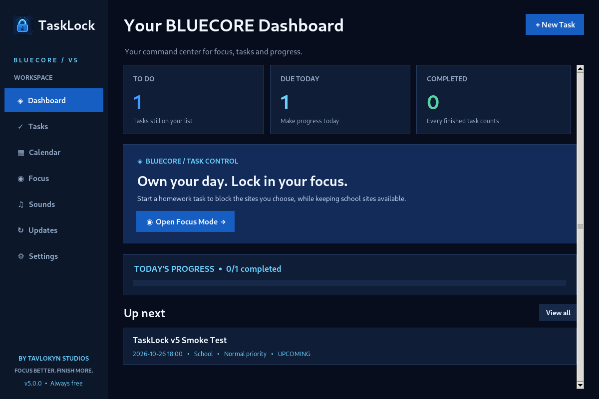

Your tasks.
Your time.
Your focus.
Plan your day. Protect your focus. Finish what matters. BLUECORE brings tasks, a calendar, reminders, and optional focus tools together in a sleek Windows app.
Free to use · Windows 10/11 · No account needed · Tasks stored locally · Public beta available

Built to make getting things done easier.
TaskLock started as a reminder. Now it has a dedicated dashboard, task management, and study-friendly focus tools.
Colorful dashboard
See what's due today, your upcoming work, and the progress you've made.
Real task management
Add, edit, categorize, prioritize, search and complete tasks. Create subtasks and repeat daily, on weekdays, weekly, monthly or yearly.
Calendar view
Switch between month, week, and day views to plan your schedule.
Homework focus
Optionally block chosen distracting sites through the companion Chrome/Edge extension. Pause anytime.
Twelve ringtones
Choose from original melodies or import a WAV file. Full-screen alerts include Done, Snooze, and Emergency Exit.
What's New
Read the release history in the app and check for new published versions.
BLUECORE has reached its first major milestone.
From a simple reminder idea to a real Windows installer build. Here's where TaskLock stands today, and what comes next.
Windows installer: built successfully.
The first automated Windows build passed. Our first public beta is available. We are continuing to test installation, reminders, backups, and the focus extension.
See release status ↓New visual identity, dashboard, task and focus features.
Automated build produced installer files for testing.
Installer available while we test and improve the app.
V5.1.0 Color & Sound Edition is in development.
TaskLock v5 Windows release
Our first beta installer is published. Use the official GitHub-hosted download; testing is ongoing. The installer is intended to run without requiring Python.
Official GitHub release link; beta software.
Get the installer
Download the latest official Windows installer from this page.
Install and launch
Scan the file with Windows Security, install, then launch TaskLock from Start. Do not disable system protections.
Optional website blocking
In Chrome or Edge extensions, use Load unpacked to load the included Browser_Extension folder.
What's new in TaskLock?
New expressive color themes and instrument-inspired reminder sounds are being prepared for testing.
New lock icon, revamped dashboard, advanced subtasks and recurrence, day/week/month calendar, focus timer, twelve ringtones, themes, local backup/restore and Windows installer workflow.
Blue-and-black redesign, new dashboard, improved task management, focus controls, eight ringtones, update log, and Windows release pipeline.
Added website blocking for online homework with a Chrome/Edge companion extension.
Three original sounds, preview playback, and custom WAV selection.
Saved tasks, calendar, recurring reminders, full-screen alerts, Done, Snooze, and Emergency Exit.
TaskLock V6 is on the drawing board.
We're collecting ideas for the next chapter. No V6 features or release date are confirmed yet—our priority is making BLUECORE dependable.
Built with focus in mind. Designed to keep evolving.
Follow Tavlokyn Studios for the broader story behind TaskLock and future software projects.
Visit Tavlokyn Studios ↗Frequently asked questions
Is TaskLock free?
Yes. TaskLock v5 is designed to be free to use. The public Windows installer has not been released yet.
Does TaskLock need an account or cloud storage?
No account is required. Task information is stored locally on your computer; there is no cloud sync in v5.
Does Focus Mode block every website automatically?
No. Website blocking is optional and works with a companion extension for Chrome or Edge. You choose sites to block and can pause the feature.
Can I download the Windows installer now?
The first build succeeded for private testing. The download button will activate after an official public GitHub Release with a Windows installer is available.